8 Reaction kinetics
Rates, collision theory, Maxwell-Boltzmann distributions and catalysts
8 Reaction kinetics
本章对应 CIE 9701 AS Chemistry 的 Reaction kinetics，重点是定义和计算反应速率，用 collision theory 与 Maxwell-Boltzmann distribution 解释速率变化，并分析 catalysts 和 energy profile diagrams。
Learning objectives
学完本章后，你应该能够：
- define and calculate average and instantaneous rates;
- explain effective collisions using energy and orientation;
- predict the effects of concentration, pressure, temperature and surface area;
- interpret Maxwell-Boltzmann distributions;
- use energy profiles to identify activation energy and enthalpy change;
- explain how homogeneous and heterogeneous catalysts change reaction rates.
Key ideas
- Rate is a change in a measurable quantity per unit time; the gradient of a concentration/volume-time graph is the rate.
- A collision must have sufficient energy and suitable orientation to be successful.
- Temperature changes the energy distribution; concentration, pressure and surface area mainly change collision frequency.
- A catalyst gives an alternative pathway with a lower activation energy, but does not change ΔH or the equilibrium position.
8.1 Rate of reaction
The rate of reaction is the change in amount or concentration of a reactant or product per unit time.
For a reactant being used up:
\[\text{rate}=\frac{-\Delta[\text{reactant}]}{\Delta t}\]
For a product being formed:
\[\text{rate}=\frac{\Delta[\text{product}]}{\Delta t}\]
Typical units are mol dm-3 s-1. If a gas volume or mass is measured, units such as cm3 s-1 or g s-1 may be used.
Worked example - average rate
If a reaction produces 7.0 cm3 gas in the first 100 s:
\[\text{average rate}=\frac{7.0}{100}=0.070\ \mathrm{cm^3\ s^{-1}}\]
The average rate uses two points. The instantaneous rate at a particular time is found from the gradient of a tangent to the curve at that time.
On a product-volume versus time graph:
- a steep gradient means a fast reaction;
- a decreasing gradient means the reaction is slowing;
- a horizontal section means no further product is forming;
- the final height is the total amount of product, not the rate.
When comparing two curves, use the initial tangent for the initial rate. A curve can have a steeper initial gradient but the same final height if the starting amount of limiting reactant is unchanged. A larger final height means more product was made, not automatically a faster reaction.
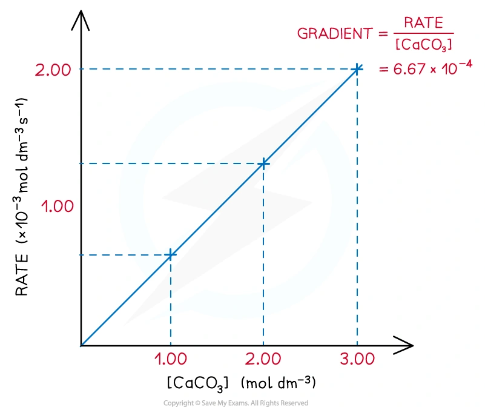
8.2 Collision theory
Particles must collide for a reaction to occur, but most collisions are ineffective. An effective collision requires:
- energy equal to or greater than the activation energy, Ea;
- the correct orientation for bonds to break and form.
The rate increases when the number of effective collisions per unit time increases.
Collision theory has two separate requirements. A collision can be energetic enough but incorrectly oriented, or correctly oriented but below Ea; either way, it is unsuccessful. Use both ideas when the question asks why a molecular reaction is slow.
Concentration and pressure
Increasing the concentration of a solution puts more particles in each unit volume, so collision frequency increases. For gases, increasing pressure at constant temperature also increases concentration and collision frequency. The energy distribution and Ea do not change.
Surface area
For a reaction involving a solid, smaller pieces or a powder expose a larger total surface area. More particles can collide at the surface per second, so the initial rate increases. Surface area does not change the total amount of solid available.
8.3 Temperature and Maxwell-Boltzmann distributions
When temperature increases, particles have a greater mean kinetic energy. The Maxwell-Boltzmann distribution becomes broader, its peak becomes lower and the most probable energy moves to the right. The total area under the curve stays constant if the number of particles is unchanged.
The important rate effect is not simply “particles move faster”. The area to the right of Ea becomes larger, so the proportion of particles able to make effective collisions increases greatly.
When temperature decreases, the curve becomes taller and narrower, and the peak moves left. The area beyond Ea becomes smaller.
If a catalyst is added at constant temperature, the Maxwell-Boltzmann distribution itself does not move. Instead, the Ea line moves left because the alternative pathway has a lower activation energy; the area to the right of Ea is then larger.
8.4 Catalysts
A catalyst provides an alternative reaction pathway with a lower activation energy. At the same temperature, a larger proportion of particles can react successfully, so the rate increases.
A catalyst:
- does not change ΔH or the energies of reactants and products;
- does not change the equilibrium position or final yield;
- is not used up overall;
- lowers the activation energy for both forward and reverse reactions.
A homogeneous catalyst is in the same physical state as the reactants. A heterogeneous catalyst is in a different physical state. A solid heterogeneous catalyst is often used as a powder to give a large surface area for adsorption and reaction.
For a heterogeneous catalyst, reactant molecules adsorb on active sites at the surface. Bonds can be weakened, the reactants are held close together in a favourable orientation, reaction occurs, and products desorb to free the site. Poisoning or blocking active sites lowers the rate.
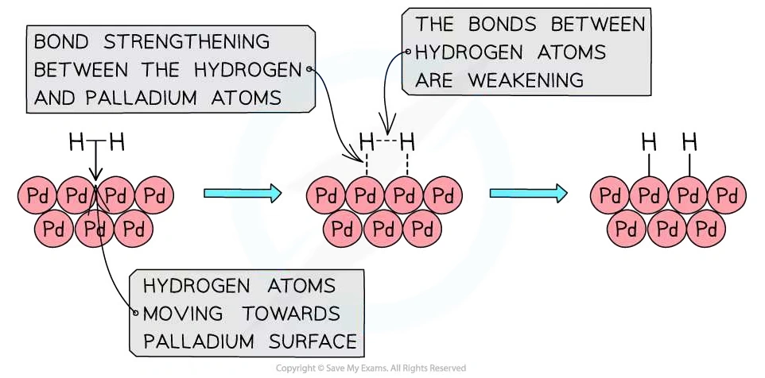
8.5 Energy profile diagrams
For an energy profile:
\[E_{a,\,forward}=E_{transition\ state}-E_{reactants}\]
\[E_{a,\,reverse}=E_{transition\ state}-E_{products}\]
The enthalpy change is:
\[\Delta H=E_{products}-E_{reactants}\]
Products below reactants indicate an exothermic reaction. Products above reactants indicate an endothermic reaction. A catalyst lowers the peak but leaves the reactant and product levels unchanged.
Worked example - reverse activation energy
For an exothermic reaction with ΔH = -52 kJ mol-1, if the forward uncatalysed activation energy is 183 kJ mol-1:
\[E_{a,\,reverse}=183-(-52)=235\ \mathrm{kJ\ mol^{-1}}\]
For a catalysed forward activation energy of 105 kJ mol-1, the reverse value is \(105-(-52)=157\ \mathrm{kJ\ mol^{-1}}\).
8.6 Planning rate experiments
Common measurements include gas volume, mass loss, concentration by titration, colour intensity and turbidity. Keep all other variables constant when investigating one factor.
For a gas-volume experiment, connect the flask to a gas syringe quickly, record volume at regular time intervals and plot volume against time. Use a tangent to determine an instantaneous rate. Repeat experiments and compare curves using both their initial gradients and final values.
Safety points include using eye protection, controlling exothermic reactions and avoiding a sealed system when gas pressure could rise dangerously.
8.7 Common rate-experiment errors
- Start timing as the reactants are mixed; delay loses the fastest part of the reaction.
- A gas syringe must be connected before the reaction begins, and the apparatus must be airtight.
- Keep temperature, total volume, surface area and amount of limiting reagent constant unless one is the independent variable.
- Repeat readings and use a mean; identify anomalies rather than silently deleting them.
- State whether a method measures gas volume, mass loss, colour/turbidity or concentration, and choose units that match the measurement.
Chapter checklist
Multiple choice questions
8 Reaction kinetics - Multiple Choice: Easy
Question 1 · Activation energy · 1.8 Choice Easy Q1
Which of the following factors can affect the value of the activation energy of a reaction?
- The presence of a catalyst
2. Changes in temperature
3. Changes in the concentration of the reactants
Show explanation
A. A catalyst provides an alternative pathway with a different, lower activation energy. Temperature and concentration change the rate but not Ea.
Question 2 · Catalysts and palladium ions · 1.8 Choice Easy Q2
Butadiene is oxidised to crotonaldehyde using a hot aqueous solution of palladium(II) ions, Pd2+(aq), which catalyse the reaction. Which statement about the action of Pd2+(aq) ions is not correct?
Show explanation
B. A catalyst does not increase the energy of reacting particles; it lowers Ea by providing an alternative pathway.
Question 3 · Maxwell-Boltzmann distribution and catalysts · 1.8 Choice Easy Q3
The original figure shows two activation energies, Ea1 and Ea2, on a Maxwell-Boltzmann distribution. One is for a catalysed reaction and the other for an uncatalysed reaction. When a catalyst is used, which pair is correct?
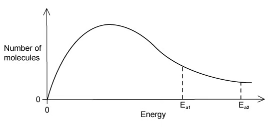
Show explanation
B. The catalysed pathway has the lower activation energy, so a larger proportion of molecules can make effective collisions.
Question 4 · Temperature and forward/reverse rates · 1.8 Choice Easy Q4
For the Haber process, \[\ce{N2(g) + 3H2(g) <=> 2NH3(g)}\qquad \Delta H=-93\ \mathrm{kJ\ mol^{-1}}\] what happens to the rate of the forward and reverse reactions when temperature is increased?
Show explanation
B. Higher temperature increases the fraction of particles with energy at least Ea for both directions, so both rates increase.
Question 5 · Temperature and effective collisions · 1.8 Choice Easy Q5
Why does a mixture of hydrogen and bromine react faster at 500 K than at 400 K?
- A higher proportion of effective collisions occurs at 500 K.
2. Hydrogen and bromine molecules collide more frequently at 500 K.
3. The activation energy is lower at 500 K.
Show explanation
C. The proportion of particles with energy above Ea increases and collisions are more frequent. Ea itself does not change with temperature.
Question 6 · Pressure and gaseous reaction rate · 1.8 Choice Easy Q6
When the pressure of a fixed mass of gaseous reactants is raised at constant temperature, the rate increases. Which statement explains this observation?
- Raising pressure lowers Ea.
2. More molecules have energy greater than Ea at higher pressure.
3. More collisions occur per second when pressure increases.
Show explanation
C. Pressure changes the concentration and collision frequency, but not the energy distribution or Ea.
Question 7 · Temperature and reaction rate · 1.8 Choice Easy Q7
What is the main reason for the increase in reaction rate with increasing temperature?
Show explanation
D. The key effect is the increased proportion of molecules with energy at least Ea, producing more effective collisions.
Question 8 · Activation energy of the reverse reaction · 1.8 Choice Easy Q8
The original reaction pathway diagram is for \[\ce{Z(g)+Y(g) <=> X(g)+W(g)}\]. What statement is true about the reverse reaction, \[\ce{W(g)+X(g) <=> Y(g)+Z(g)}\]?
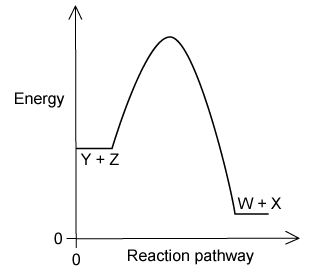
Show explanation
D. The reverse reaction starts at the product energy, so its activation energy is larger; the forward reaction is exothermic and the reverse is endothermic.
Question 9 · Temperature increase of 10 °C · 1.8 Choice Easy Q9
A student measures a reaction at 40 °C and 50 °C and observes that the rate roughly doubles. What explains this observation?
Show explanation
C. A small temperature increase can greatly increase the fraction of molecules with energy ≥ Ea; neither average speed nor collision frequency simply doubles.
Question 10 · How catalysts work · 1.8 Choice Easy Q10
Which statements correctly describe how a catalyst works?
- A catalyst has no effect on the enthalpy change of the reaction.
2. A catalyst increases the rate of the reverse reaction.
3. A catalyst increases the average kinetic energy of the reacting particles.
Show explanation
B. A catalyst does not change ΔH and speeds both forward and reverse reactions. It does not increase particle kinetic energy.
8 Reaction kinetics - Multiple Choice: Medium
Question 11 · Boltzmann distribution peak · 1.8 Choice Medium Q1
The original Boltzmann distribution graph has a point X at the most probable energy. If temperature is increased, what happens to X?
Show explanation
A. The distribution becomes broader, lower and shifted to higher energy.
Question 12 · Activation energy on a pathway diagram · 1.8 Choice Medium Q2
The original diagram shows an endothermic reaction pathway with energy levels E1, E2 and E3. Which expression represents the activation energy for the forward reaction?
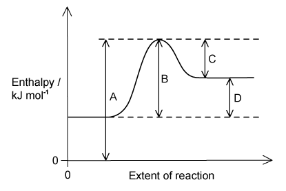
Show explanation
B. Forward activation energy is the energy difference from the reactants to the transition-state maximum.
Question 13 · Forward activation energy · 1.8 Choice Medium Q4
In the original reaction pathway diagram, E1, E2 and E3 label the energy levels of the products, reactants and transition state. Which expression correctly represents the activation energy of the forward reaction?
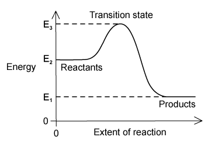
Show explanation
D. Activation energy is the energy from the reactants to the transition state, represented here by E3 − E2.
Question 14 · Catalyst and Ea position · 1.8 Choice Medium Q5
In the original Boltzmann distribution, Ea is marked for the uncatalysed reaction. Which labelled position would represent Ea when an effective catalyst is used?
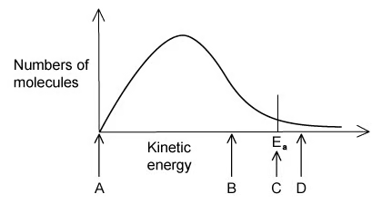
Show explanation
B. A catalyst lowers the activation energy, so the Ea marker moves left on the energy axis.
Question 15 · Catalyst and Boltzmann distribution · 1.8 Choice Medium Q7
The original distribution has a peak labelled Q. What happens when an effective catalyst is added?
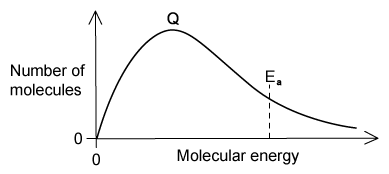
Show explanation
A. The catalyst does not change the number or energy distribution of molecules; it lowers Ea.
Question 16 · Dilution and rate · 1.8 Choice Medium Q8
Reaction 1 uses 1.5 g solid calcium carbonate and 100 cm3 of 0.5 mol dm−3 HCl. In reaction 2, 100 cm3 distilled water is added to the same volume of acid before the calcium carbonate. Reaction 1 is faster. Which hypothesis correctly explains the difference?
- Adding water reduces collision frequency.
2. Adding water reduces the proportion of effective collisions.
3. Adding water reduces the proportion of particles possessing Ea.
Show explanation
A. Dilution reduces concentration and collision frequency. It does not change the energy distribution, orientation requirement or Ea.
8 Reaction kinetics - Multiple Choice: Hard
Question 17 · Photochemical catalysts · 1.8 Choice Hard Q1
Photochromic glass darkens in bright light and becomes transparent again in dim light. The original question gives three reactions involving Ag+, Cu+, Cu2+, Cl− and Ag. Which statement is correct?
Show explanation
B. The copper ions participate in a cycle and are regenerated, so they catalyse the reversible photochromic process.
Question 18 · Concentration and collision frequency · 1.8 Choice Hard Q2
When 1 cm3 of 0.1 mol dm−3 HCl is added to 10 cm3 of 0.02 mol dm−3 Na2S2O3, a pale yellow precipitate forms slowly. Repeating the experiment with 0.05 mol dm−3 Na2S2O3 makes the precipitate form more quickly. Why?
Show explanation
A. Higher concentration means more reacting particles per unit volume and therefore a higher collision frequency.
Question 19 · Vapour pressure and temperature · 1.8 Choice Hard Q4
A quantity of solid Y is placed in an evacuated vessel and held at different temperatures. The mass of Y in the vapour state is calculated from pressure measurements. The original graph levels off at mass m above temperature T. Which statements can be deduced?
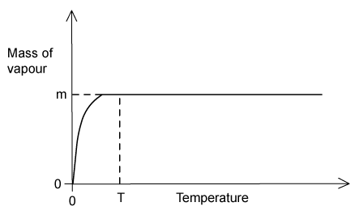
- The mass of Y used was m.
2. The vapour pressure was constant for all temperatures above T.
3. Liquid appeared at temperature T.
Show explanation
A. Once the mass of vapour reaches m, all solid has vaporised. The graph does not show that vapour pressure is constant or that liquid appeared.
Question 20 · Hydrogen peroxide decomposition · 1.8 Choice Hard Q5
Curve 1 in the original graph was obtained from the decomposition of 100 cm3 of 1.0 mol dm−3 hydrogen peroxide in the presence of MnO2. Which alteration would produce curve 2, which has a slower initial rate but a larger final volume of oxygen?
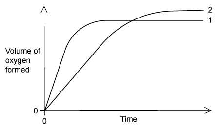
Show explanation
D. Adding lower-concentration H2O2 slows the initial rate but increases the total amount of H2O2 available, so more oxygen is eventually formed.
Structured questions
8 Reaction kinetics - Structured Questions: Easy
Example 1 · Collision theory and hydrogen peroxide · 1.8 SQ Easy Q1
(a) According to collision theory, state two conditions that particles need for an effective collision to occur. [2 marks]
(b) An increase in concentration means that there are more particles per unit volume. In terms of collisions, explain how this increases the rate of reaction. [1 mark]
(c) Aqueous hydrogen peroxide decomposes:
\[\ce{2H2O2(aq) -> 2H2O(l) + O2(g)}\]
A student adds 25.00 cm3 of H2O2(aq), a small spatula measure of MnO2, connects a gas syringe and measures the volume of oxygen every 100 s.
(i) State the role of MnO2. [1 mark]
(ii) The oxygen volumes at 0 s and 100 s are 0.0 cm3 and 7.0 cm3. Calculate the average rate for the first 100 s. [1 mark]
Show mark scheme / model answer
- (a) Particles must collide with energy at least equal to the activation energy and with the correct orientation.
- (b) More frequent effective collisions occur per unit time.
- (c) MnO2 is a catalyst. Average rate \(=(7.0-0.0)/100=0.070\ \mathrm{cm^3\ s^{-1}}\).
Example 2 · Energy profile and activation energy · 1.8 SQ Easy Q2
For the general reaction \(\ce{A+B -> C+D}\), Fig. 2.1 in the original question shows the reactants at the lower energy level, products 150 kJ mol−1 above the reactants, and the transition state a further 180 kJ mol−1 above the products.
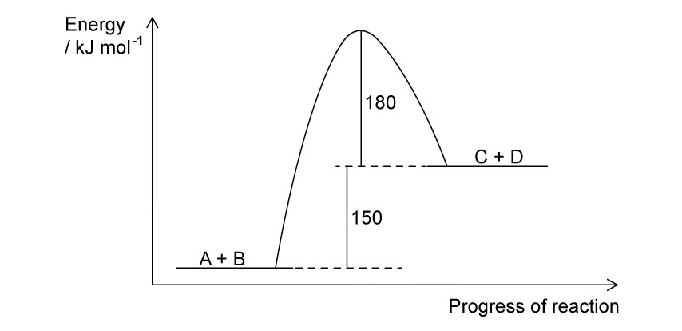
(a) Explain whether the forward reaction is exothermic or endothermic. [2 marks]
(b) Define activation energy. [1 mark]
(c) Use Fig. 2.1 to calculate the activation energies for the forward and backward reactions. [2 marks]
(d) Explain, using Fig. 2.2, how adding a catalyst affects the rate. [3 marks]
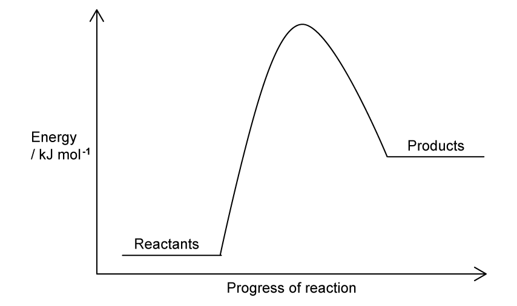
Show mark scheme / model answer
- (a) Endothermic: products are at higher energy than reactants and ΔH is positive.
- (b) The minimum energy that reacting particles must possess for a reaction to occur.
- (c) Forward Ea = 150 + 180 = 330 kJ mol−1; backward Ea = 180 kJ mol−1.
- (d) The catalysed pathway has a lower peak and lower Ea; a greater proportion of particles can make effective collisions, so the rate increases.
Example 3 · Boltzmann distributions · 1.8 SQ Easy Q3
The original question gives a Boltzmann distribution of molecular energies for a reaction at a fixed temperature.
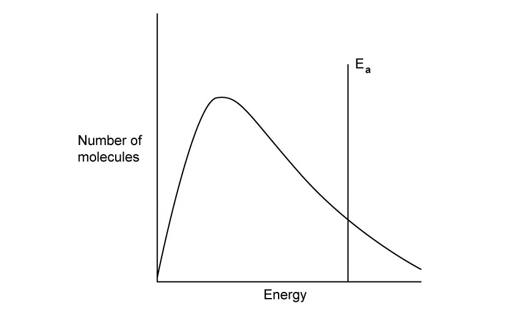
(a) State what happens to the curve when temperature is decreased. [2 marks]
(b) Comment on how the total area under the curve changes with temperature. [1 mark]
(c) State what happens to the curve when a catalyst is added. [2 marks]
(d) In Fig. 3.2, state what the shaded area represents. [1 mark]
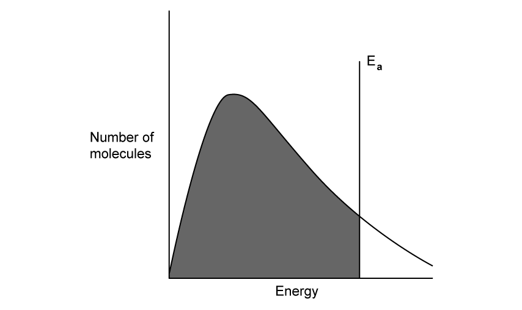
Show mark scheme / model answer
- (a) The peak becomes higher and moves to the left; the curve becomes narrower.
- (b) The total area stays the same because the total number of molecules is unchanged.
- (c) The distribution curve is unchanged; the activation-energy marker moves to a lower energy.
- (d) Molecules with energy at least Ea, so the molecules able to make effective collisions.
8 Reaction kinetics - Structured Questions: Medium
Example 4 · Boltzmann curves and heterogeneous catalysts · 1.8 SQ Medium Q1
Fig. 1.1 shows a Boltzmann distribution for a mixture of gases at temperature T, with Ea marked.
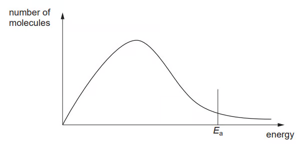
(a)(i) Draw a new distribution curve, labelled T2, at a lower temperature, and mark the activation energy at T2. [3 marks]
(a)(ii) On the same energy axis, mark the activation energy when a catalyst is used and explain how a catalyst gives a faster reaction. [2 marks]
(b) Two reactions involving aqueous NaOH are:
\[\ce{CH3CHBrCH3 + NaOH -> CH3CH(OH)CH3 + NaBr}\] \[\ce{H2SO4 + 2NaOH -> Na2SO4 + 2H2O}\]
The first requires heating, whereas the second is almost instantaneous at room temperature. Suggest brief explanations for the different rates. [4 marks]
Show mark scheme / model answer
- (a) Lower temperature gives a higher, left-shifted peak; Ea does not change. A catalyst gives a lower Ea, so a larger proportion of molecules has sufficient energy.
- (b) Reaction 1 involves breaking covalent bonds and has a larger activation energy. Reaction 2 is an acid–base reaction between ions, so H+ and OH− react rapidly with little bond rearrangement.
Example 5 · Heterogeneous catalyst and rate curve · 1.8 SQ Medium Q2
A platinum–rhodium catalyst is used in:
\[\ce{4NH3(g) + 5O2(g) -> 4NO(g) + 6H2O(g)}\]
(a)(i) State what is meant by a heterogeneous catalyst. [1 mark]
(a)(ii) Explain why a catalyst has no effect on the product yield. [2 marks]
Students investigate \(\ce{A(s)+B(aq)->C(g)}\) by collecting gas. Their graph rises and levels off at a point labelled R.
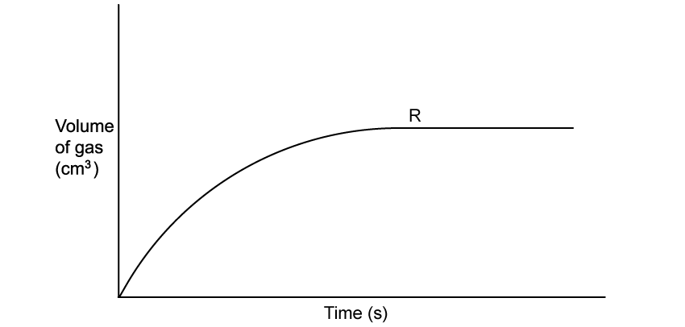
(b)(i) State and explain what R represents. [1 mark]
(b)(ii) The original experiment uses 0.5 g A and 50 cm3 of 1.0 mol dm−3 B. Describe the curve expected when 50 cm3 of 2.0 mol dm−3 B is used instead. [2 marks]
(c) Explain why the gradient of the curve decreases as the reaction progresses. [2 marks]
Show mark scheme / model answer
- (a) The catalyst is in a different physical state from the reactants. It lowers Ea for both directions, so it changes rate but not the equilibrium position/yield.
- (b) R is the maximum volume of gas when the limiting reactant is used up. Doubling B makes the initial gradient steeper, but A is still limiting, so the final volume is unchanged.
- (c) Reactant concentration decreases, so collision frequency and the rate decrease.
Example 6 · Effective collisions and pressure · 1.8 SQ Medium Q3
(a)(i) Explain what is meant by an effective collision. [1 mark]
(a)(ii) State two factors that could cause an ineffective collision. [2 marks]
(b) A student says: “The rate of a reaction increases with temperature as there are more collisions.” Discuss why this is only true to an extent and what else must be considered. [5 marks]
(c) Hydrogen and oxygen form water:
\[\ce{2H2(g) + O2(g) -> 2H2O(g)}\]
Describe and explain the effect of increasing pressure on the rate. [2 marks]
Show mark scheme / model answer
- (a) Particles collide with sufficient energy and the correct orientation. Ineffective collisions have insufficient energy or an unsuitable orientation.
- (b) Temperature increases collision frequency, but the main effect is that the distribution shifts so more molecules have energy ≥ Ea; therefore the number of effective collisions increases.
- (c) Pressure increases concentration, causing more frequent collisions per unit time and a faster rate.
Example 7 · Calcium carbonate rate experiment · 1.8 SQ Medium Q4
Calcium carbonate reacts with hydrochloric acid:
\[\ce{CaCO3(s) + 2HCl(aq) -> CaCl2(aq) + H2O(l) + CO2(g)}\]
50.0 cm3 HCl is added to excess small pieces of CaCO3. Experiment 1 uses 0.50 mol dm−3 HCl at 20 °C; Experiment 2 uses the same concentration at 60 °C; Experiment 3 uses 1.00 mol dm−3 HCl at 20 °C.
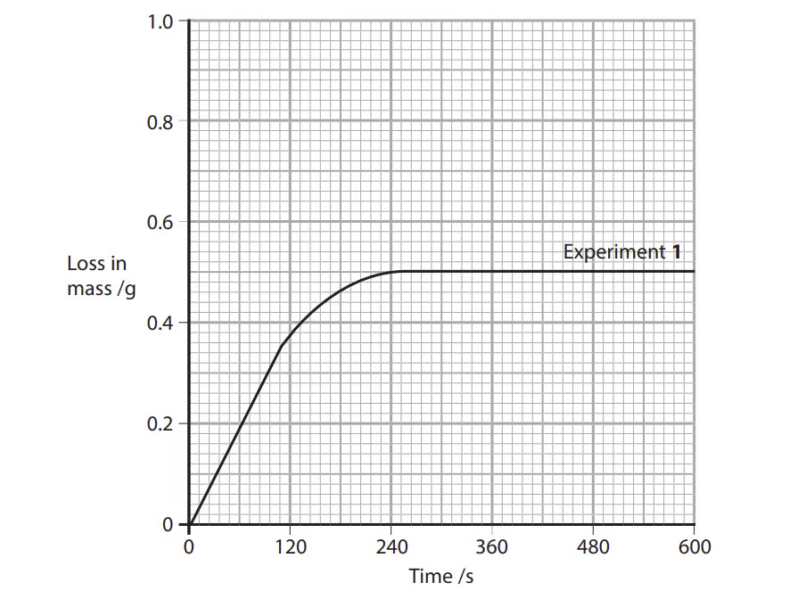
(a) On the original graph, sketch the curves expected for Experiments 2 and 3. [2 marks]
(b) Determine the initial rate for Experiment 1 using a tangent. [3 marks]
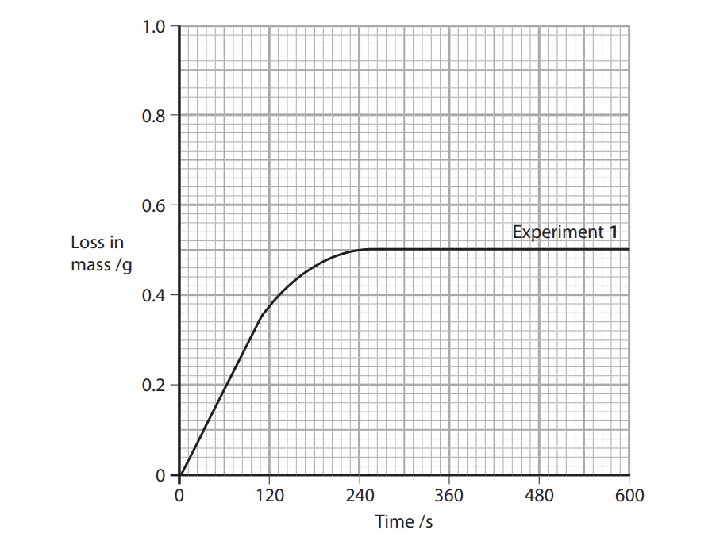
(c) Calculate the average rate over the first 240 s if the mass loss at 240 s is 0.50 g.[1 mark](d) State and explain the effect of using larger pieces of calcium carbonate.
[2 marks]
Show mark scheme / model answer
- (a) Curve 2 is initially steeper but reaches the same final mass loss. Curve 3 is initially steeper and reaches a greater final mass loss because more acid is available.
- (b) Draw a tangent at t=0 and calculate gradient \(\Delta m/\Delta t\); the value is approximately \(3.0\times10^{-3}\ \mathrm{g\ s^{-1}}\) from the original graph.
- (c) \(0.50/240=2.1\times10^{-3}\ \mathrm{g\ s^{-1}}\).
- (d) Rate decreases because larger pieces have a smaller total surface area, so fewer collisions occur at the solid surface.
Example 8 · Ammonia energy profile and catalysts · 1.8 SQ Medium Q5
For the ammonia reaction:
\[\ce{N2(g) + 3H2(g) <=> 2NH3(g)}\qquad \Delta H=-92\ \mathrm{kJ\ mol^{-1}}\]
the catalysed activation energy is 109 kJ mol−1.
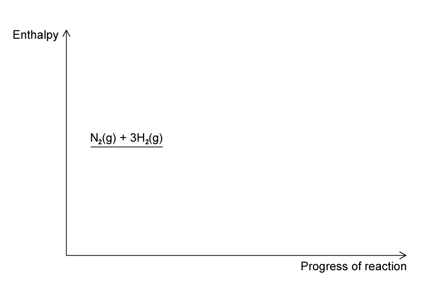
(a) Complete the original energy profile for the uncatalysed and catalysed reactions, labelling products, ΔH, Ea for the uncatalysed reaction and Ea for the catalysed reaction. [4 marks]
(b) Calculate the activation energy for the catalysed decomposition of ammonia into nitrogen and hydrogen. [1 mark]
(c) Explain, using a labelled Boltzmann distribution, why an iron catalyst increases the rate. [1 mark]
(d) Platinum in a catalytic converter removes nitrogen oxide:
\[\ce{2NO(g) + 2CO(g) -> N2(g) + 2CO2(g)}\]
State the type of catalyst and explain whether nitrogen is oxidised or reduced. [3 marks]
Show mark scheme / model answer
- (a) Products are 92 kJ mol−1 below reactants; the catalysed peak is lower than the uncatalysed peak.
- (b) Reverse Ea = 109 + 92 = 201 kJ mol−1.
- (c) The catalyst lowers Ea, so the area beyond Ea and the number of effective collisions increase.
- (d) Platinum is a heterogeneous catalyst. Nitrogen is reduced: +2 in NO changes to 0 in N2.
8 Reaction kinetics - Structured Questions: Hard
Example 9 · Reaction profiles and heterogeneous catalysts · 1.8 SQ Hard Q1
Reaction rates can be affected by pressure and temperature.
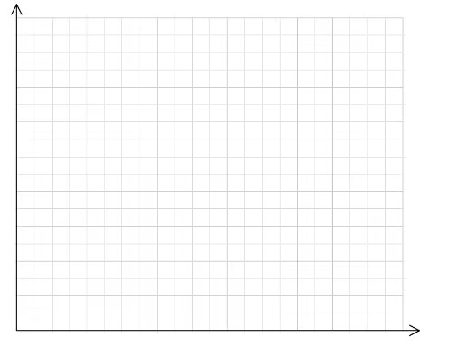
(a) Sketch a Maxwell-Boltzmann distribution at T1 and a second distribution at higher T2. State how the mean molecular energy changes. [4 marks]
Hydrogen iodide decomposes:
\[\ce{2HI(g) -> H2(g) + I2(g)}\qquad \Delta H=-52\ \mathrm{kJ\ mol^{-1}}\]
The uncatalysed Ea is 183 kJ mol−1 and the gold-catalysed Ea is 105 kJ mol−1.
(b) Sketch the reaction profile with both activation-energy curves, calculate the reverse Ea values, and explain why increasing [HI] increases rate. [6 marks]
(c) Explain why a solid gold catalyst is likely to be used as a powder, distinguish homogeneous from heterogeneous catalysts, and state what happens to the area under a Maxwell-Boltzmann curve when a catalyst is introduced at constant temperature and molecule number. [3 marks]
(d) In the Contact process, write the balanced equation for sulfur dioxide oxidation using solid vanadium(V) oxide and explain why the catalyst reduces energy demand and benefits the environment. [3 marks]
Show mark scheme / model answer
- (a) The higher-temperature curve is lower, broader and shifted right; the mean energy is higher.
- (b) Reverse Ea values are 183−(−52)=235 kJ mol−1 uncatalysed and 105−(−52)=157 kJ mol−1 catalysed. Higher [HI] gives more frequent collisions.
- (c) Powder gives a larger surface area for reactants to adsorb. Homogeneous catalysts have the same state as reactants; heterogeneous catalysts have a different state. The area is unchanged because the number of molecules is unchanged.
- (d) \(\ce{2SO2(g)+O2(g) <=> 2SO3(g)}\) with state symbols; V2O5 lowers Ea, allowing lower operating temperature and reducing energy use/emissions.
Example 10 · Effective collisions and hydrogen chloride · 1.8 SQ Hard Q3
Hydrogen reacts with chlorine to form hydrogen chloride:
\[\ce{H2(g) + Cl2(g) -> 2HCl(g)}\]
(a) Give one reason why most collisions between hydrogen and chlorine molecules do not form hydrogen chloride. [1 mark]
(b) Apart from changing temperature, state and explain two ways of speeding up the formation of hydrogen chloride. [4 marks]
Show mark scheme / model answer
- (a) Most collisions have insufficient energy or the molecules have an unsuitable orientation.
- (b) Increase pressure/concentration to increase collision frequency; add a catalyst to lower Ea and increase the proportion of effective collisions. Light can also initiate the reaction by providing energy.
Original question PDFs
页面中的图表使用 PDF 内独立嵌入的图像对象提取，不使用整页截图；PDF 内为矢量绘制且没有独立图像对象的图形不强行转换。